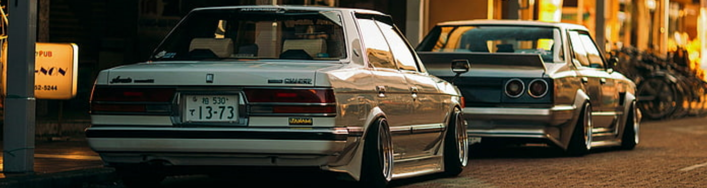

Mental Health In The Car Community
-
Many people in the car or even the bike community have some problems going on with their mental health. This isn't just car people, that is correct. Mental illness is very common everywhere. However, it is still something that should be talked about under this specific website due to it's topic. Being involved in these communities, be there for each other. Make friends, talk to each other. Work on your cars together. Go to events together. It doesn't even have to be car related events, cruise along the way. Wave when you see another car person on the street. It'll make their day. Give them a compliment on their car, don't be scared. It'll be all they think about for the rest of the day, put them in a good mood.
You can be at your lowest. That car is going to bring you up. Ways we like to cope with our problems are driving our cars, taking it to the track, drifting or racing. Just be careful. That's why this is good to talk about for this specific community. Cars or bikes can be dangerous. Especially when you are feeling low. I see it, I get it, trust me.